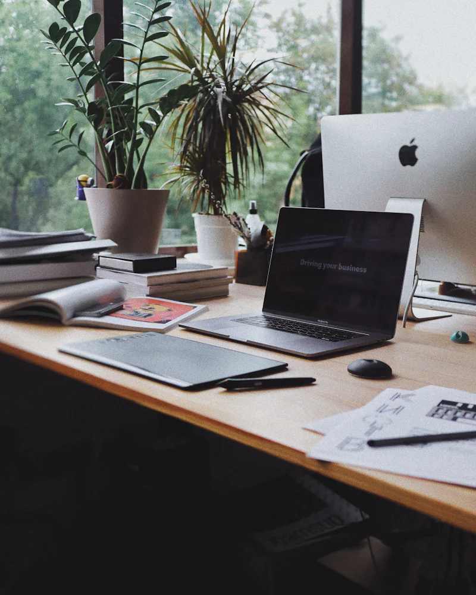
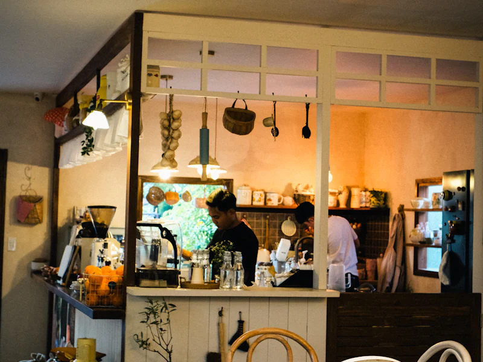
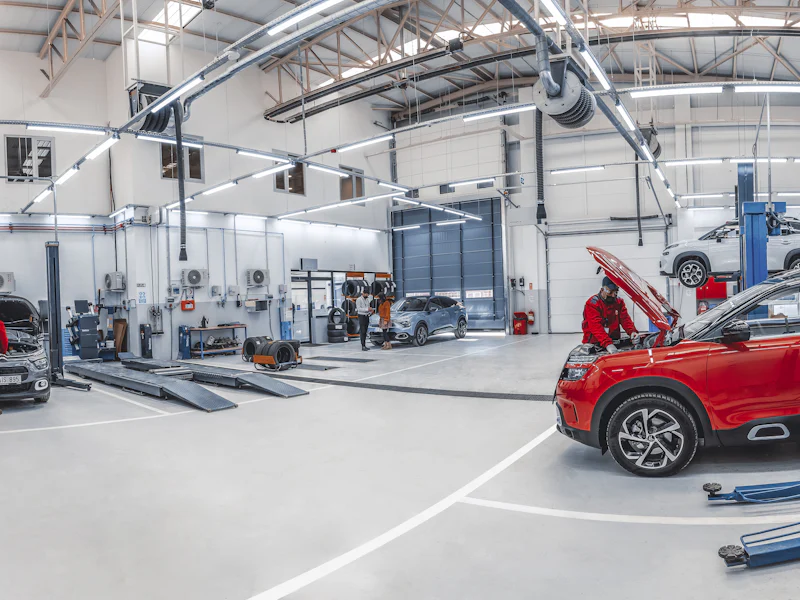
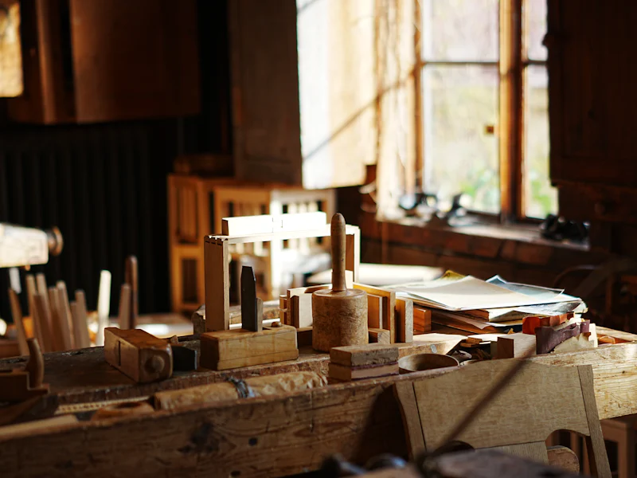

„Web máme, ale nikdo se neozve.“
Web vypadá hezky, jenže návštěvníci odcházejí, aniž by zavolali nebo napsali.
Weby + reklama na Facebooku a Instagramu
Web i reklamu, která na něj přivede lidi, máte od jednoho člověka. Nemusíte nic koordinovat ani rozumět technice – já se postarám, aby se vám zákazníci ozývali.

Znáte to?
Web vypadá hezky, jenže návštěvníci odcházejí, aniž by zavolali nebo napsali.
Peníze odešly, poptávky nepřišly. A nikdo vám neumí vysvětlit proč.
Webař tvrdí, že chyba je v reklamě. Reklamní agentura, že ve webu. A vy jste uprostřed.
Moje řešení
Když web i reklamu dělá jeden člověk, do sebe všechno zapadá. Reklama přivede správné lidi a web je přesvědčí, aby se vám ozvali. A když něco nefunguje, víte přesně, komu zavolat.
Služby
Žádné přehazování mezi webařem a agenturou. Postarám se o web, reklamu i o to, aby všechno fungovalo dlouhodobě.
Moderní web, který funguje skvěle i na mobilu, rychle se načte a vede návštěvníky k tomu, aby se vám ozvali. Texty a fotky si pak snadno upravíte sami.
Vaši nabídku ukážu lidem ve vašem okolí, kteří ji opravdu hledají. Platíte za výsledky, ne za pokusy naslepo.
Aktualizace, zálohy i drobné úpravy. O web se starám i po spuštění, takže nemusíte řešit nic technického.
Každý měsíc srozumitelný přehled: kolik lidí přišlo, kolik se jich ozvalo a kolik vás to stálo.
Jak spolupracujeme
Žádné složité smlouvy ani odborné řeči. Celá spolupráce má čtyři jednoduché kroky a v každém přesně víte, co se děje a co bude následovat.
První konzultace je nezávazná
Sejdeme se osobně nebo online a probereme, co vaše firma potřebuje. Nezávazně a lidsky.
Připravím návrh webu i reklamy a předem vám řeknu, kolik to bude stát a jak dlouho to potrvá.
Postavím web, spustím reklamu a všechno pečlivě vyzkouším. Vy jen schválíte výsledek.
Sleduji výsledky, vylepšuji reklamu a starám se o web. Každý měsíc dostanete srozumitelný přehled.
Reference
Pár ukázek firem, kterým jsem pomohl. Pokaždé šlo o totéž: aby se ozývalo víc zákazníků.

Rodinná kavárna
Nový web, kde si hosté rezervují stůl na pár kliknutí, a reklama, která v okolí ukazuje denní nabídku.
+60 % rezervací za 2 měsíce

Autoservis
Web, přes který se řidiči objednají na servis přímo z telefonu, a reklama na Facebooku pro lidi do 20 km.
+85 % poptávek za 3 měsíce

Truhlářská dílna
Web, který ukazuje hotové kuchyně a nábytek na míru, a reklama zaměřená na lidi, kteří zařizují byt.
3× víc poptávek na kuchyně
Nemusela jsem nic řešit. Aleš si poslechl, co potřebujeme, a za tři týdny jsme měli nový web i první rezervace.
Konečně mi někdo srozumitelně vysvětlil, co reklama dělá. A hlavně funguje – telefon zvoní víc než kdy dřív.
Dřív jsem zakázky sháněl jen přes známé. Dnes mi chodí poptávky z Instagramu každý týden.
Časté otázky
Nenašli jste odpověď? Napište mi nebo zavolejte, rád vám všechno vysvětlím.
Zeptat se osobněZáleží na tom, co od webu potřebujete. Jednoduchý web pro živnostníka vyjde orientačně od 15 000 Kč, web s rezervacemi nebo objednávkami víc. Přesnou cenu vždycky znáte předem – žádná překvapení na faktuře.
Většinou 2–3 týdny od chvíle, kdy mám od vás podklady. S texty a fotkami vám rád pomůžu, takže nemusíte nic psát ani fotit sami.
Ne vždycky. Nejdřív se podívám na váš současný web. Když funguje dobře, stačí drobné úpravy. Když z něj ale návštěvníci odcházejí, reklama by jen vyhazovala peníze – pak se vyplatí nový.
Začít se dá už s pár tisíci korun měsíčně. Rozpočet nastavíme spolu podle vašich cílů a kdykoli ho můžete změnit. Každý měsíc uvidíte, kolik vás stál jeden nový zákazník.
Ano. Web stavím na WordPressu, takže texty, fotky nebo ceny si změníte sami – podobně jako když píšete e-mail. Ukážu vám, jak na to, a kdykoli budete potřebovat, pomůžu.